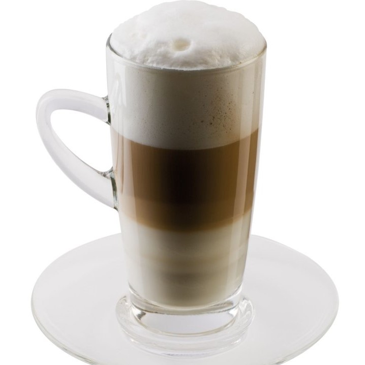
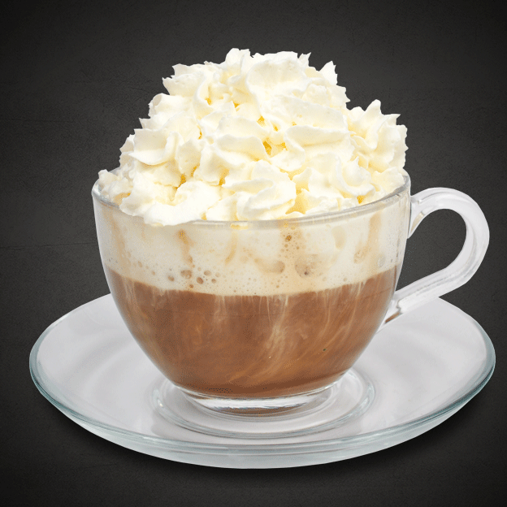

Увидели картинки кофе на прошлой странице и сами захотели приготовить что-нибудь? Добро пожаловать на наш сайт, посвященный искусству приготовления кофе! Здесь мы собрали для вас рецепты всех напитков, которые были представленны в предыдущей части сайта. Каждый сможет найти что-то себе по вкусу, цвету и кофеино-содержанию!
Рецепты
Американо

- Засыпьте в турку 7–9 г зёрен мелкого помола и прогрейте их на тихом огне, пока не почувствуется аромат кофе.
- После в турку налейте 50 мл воды и варите кофе до образования пены, но не до кипения.
- Готовый кофе нжно перелить в чашку и добавить горячую воду в пропорции 1:1, 1:2 или 1:4 — объём воды зависит от предпочтений.
- При желании в кофе можно положить кубик сахара, добавить сироп или корицу.
Эспрессо

- В сухую турку насыпьте 2-3 чайные ложки молотого кофе. Лучше использовать кофе среднего или мелкого помола, чтобы лучше заварился.
- Добавьте 2 чайные ложки сахара и немного соли. Сахара можно добавить меньше либо больше, в зависимости от предпочтений.
- Поставьте турку с кофе, сахаром и солью на слабый огонь, перемешайте и оставьте так на несколько минут. Должен появиться лёгкий белый дымок, но нужно быть внимательным и не передержать кофе.
- Влейте 200 мл тёплой воды и размешайте.
- Снова поставьте турку на огонь и нагревайте. Далеко от плиты не отходите, иначе кофе может «сбежать».
- Когда начнёт подниматься пена, снимите турку с огня.
- Подождите, пока пена осядет, и повторите манипуляции ещё раз — нагрейте до момента, когда начнёт подниматься пена, и снимите с огня.
- Накройте турку с горячим кофе блюдцем и оставьте так на 4–5 минут.
- Разлейте горячий кофе эспрессо по чашкам, подавайте сразу.
Капучино
- Насыпьте в турку 20 г свежемолотого кофе.
- Залейте в турку 60 мл горячей воды. Перемешать её с кофе и поставить на огонь. Варить 3–5 минут до закипания. Снять с огня, ещё раз перемешать и перелить в кружку.
- Подогреть 100-150 мл молока на плите или в микроволновке.
- Взбить молоко электровенчиком, капучинатором или с помощью френч-пресса до крепкой пены.
- Перелить взбитое молоко в питчер или отдельную кружку.
- Аккуратно распределить пенку на кофе.
Раф

- Приготовить эспрессо из свежемолотых зёрен. Перелить его в питчер. Если нет кофе-машины, то можно сварить крепкий кофе в турке, но тогда придётся процедить, чтобы не было мелких частичек.
- В питчер добавить по 1 чайной ложке ванильного и обычного сахара. Подойдёт исключительно ванильный сахар, но не ванилин, он не даст нужного аромата.
- Влить 150 мл сливкок. В классическом рецепте предлагается использовать 11-процентные сливки, но жирность 10% тоже подойдёт.
- Взбить смесь пароотводом. Если нет кофе-машины, можно использовать любой механический капучинатор, мини-миксер на батарейках и тому подобные. В таком случае сливки нужно заранее подогреть, чтобы напиток был тёплым.
- Должна получиться воздушная, глянцевая пенка.
- Перелить напиток в чашку или в бокал на ножке (посуда должна быть прогрета).
Латте
- Приготовить эспрессо.
- Подогреть 150 мл молока до 60°C и перелить в небольшую ёмкость.
- Вспенить молоко любым способом, например, погружным блендером.
- Прогреть бокал, для этого можно обдать его горячей водой.
- Влить свежесваренный кофе, а сверху тонкой струйкой налить взбитое молоко.
- Оставшуюся пену (если она получилась достаточно густой) можно выложить с помощью чайной ложечки.
Макиато

- В сотейник налейте молоко и, если хотите сладкий кофе, добавьте сахар. Всё перемешайте и поставьте на средний огонь. Нагрейте молоко, но не кипятите.
- Cнимите с огня молоко и вспеньте при помощи капучинатора или маленького венчика. Дайте молочной пенке немного остыть.
- Сварите в турке кофе эспрессо и дайте осесть гуще.
- В кофейную чашку переложите молочную пенку на 40% высоты.
- Очень аккуратно влейте эспрессо, чтобы слои не перемешались.
Флэт Уайт

- Приготовьте двойную порцию эспрессо в кофемашине или в турке. Налейте его в предварительно прогретую кипятком чашку.
- Подогрейте 120 мл молока до температуры не выше 60 °C.
- Взбейте молоко с помощью капучинатора, френч-пресса или насадки на кофемашину (стимера) до появления небольшой пенки с мелкими пузырьками.
- В чашку с эспрессо аккуратно влейте молоко. На поверхности должна остаться тонкая пенка.
Гляссе

- Измельчите 36 г зёрен в кофемолке. Вскипятите 180 мл воды, заварите кипятком молотый кофе во френч-прессе, кофемашине или любым другим способом.
- Дайте кофе остыть примерно до температуры +10 °С. Чтобы ускорить процесс, установите посуду с кофе в миску с холодной водой.
- Выложите 100 гр мороженого в холодную прозрачную кружку, чашку, высокий стакан или креманку. Используйте специальную ложку для формирования шариков.
- Налейте в чашку с мороженым кофе. Сразу наполняйте посуду не более чем на две трети. При контакте мороженого с кофе образуется пенка. Подождите, пока она осядет. Если пена не слишком обильная, то заполните чашку полностью.
- Подайте кофе гляссе немедленно, пока не растаяло мороженое.
Кофе по по-венски

- Взбить сливки с помощью ручного венчика, капучинатора или блендера до образования густой пены. Можно добавить сахарную пудру, чтобы сливки лучше держали объём.
- Приготовить эспрессо в кофемашине или сварить крепкий кофе в турке и дать настояться 5 минут. Перелить кофе в высокий бокал, предварительно прогретый кипятком.
- Добавить сахар по вкусу на этом этапе.
- Сверху выложить шапку сливок — аккуратно, чтобы они не смешались с кофе. Если сливки взбиты недостаточно хорошо, можно налить их по лезвию ножа, тогда они лягут сверху ровным слоем.
- Украсить тёртым шоколадом.